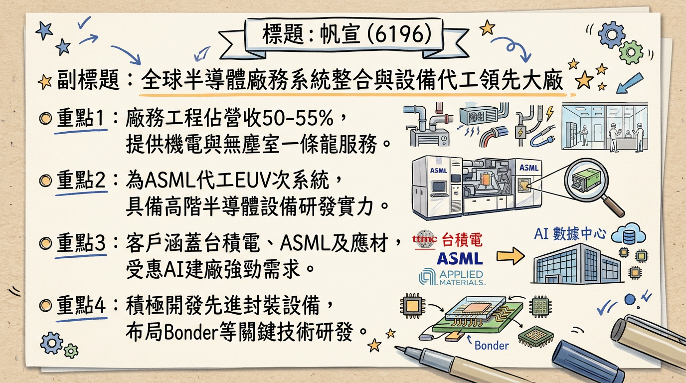
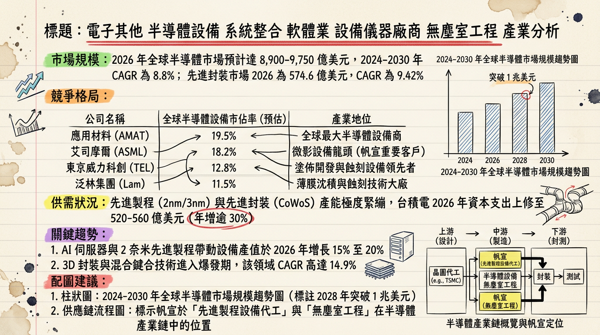
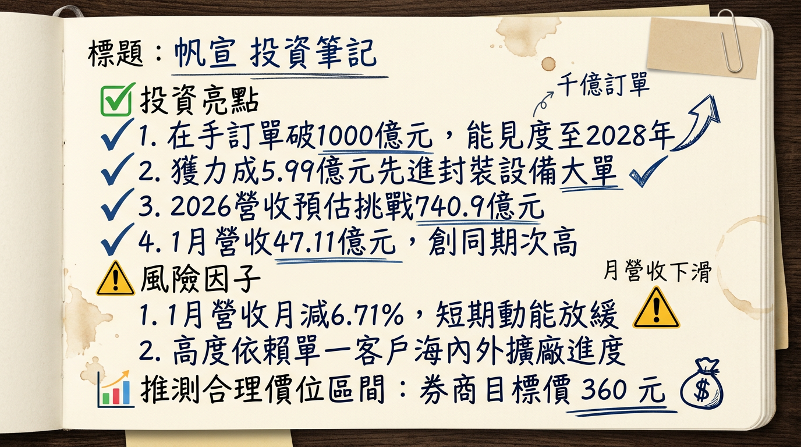

6196 帆宣 深度研究報告
一句話摘要
「千億訂單、先進封裝、ASML 核心鏈」三箭齊發，帆宣擺脫 2025 營收低谷，全面迎來 2026 獲利爆發期。
公司概覽
帆宣（6196）為全球半導體廠務與設備整合領導大廠。其獨特的業務模式結合了「廠務工程」的穩定收現與「設備 OEM/ODM」的高技術門檻，是台積電全球擴廠與 ASML EUV 機台量產不可或缺的合作夥伴。
【2025-2026 營收結構預估表格】
| 業務板塊 | 營收佔比 | 核心內容 | 主要客戶 |
|---|
| 廠務系統整合 | 50% - 55% | 無塵室、機電工程、化學氣體供應系統 | 台積電、力積電、Intel |
| 設備代工與代理 | 45% - 50% | ASML EUV 次系統模組、先進封裝設備 | ASML、應用材料、力成 |
| 客製化研發 | 微幅提升 | 先進封裝 Bonder/De-bonder、AI 智慧製造 | 封測大廠、晶圓代工廠 |
核心競爭優勢
ASML 關鍵代工夥伴：身為 ASML 在亞洲最大的 EUV 模組代工廠，隨 2 奈米及 High-NA EUV 導入，具備極高技術護城河。
全球化工程能力：具備美國、日本、德國及東南亞的在地實績，能隨大客戶台積電同步移轉產能與服務。
先進封裝轉型：從單純代理轉向客製化設備研發（CoWoS/CoPoS），利潤率高於傳統工程。
財務分析
【近 6 個月月營收趨勢表】
| 月份 | 金額 (億新台幣) | 月增率 MoM | 年增率 YoY | 備註 |
|---|
| 2026/01 | 47.11 | -6.71% | +0.50% | 歷年同期次高 |
| 2025/12 | 50.50 | -7.39% | -5.19% | 2025 全年營收結算 |
| 2025/11 | 54.53 | +31.72% | +5.72% | 創近 18 個月新高 |
| 2025/10 | 41.40 | +8.77% | -9.29% | 美國廠工程認列空窗期 |
| 2025/09 | 38.06 | -3.06% | -27.96% | 2025 營運低點 |
| 2025/08 | 39.26 | +5.15% | -27.54% | - |
- 2025 全年（自結/預估）：營收 515.67 億元 (YoY -15.01%)，EPS 14.0 - 15.0 元（創歷史新高）。
- 2026 展望（法人預估）：營收挑戰 740.9 億元，EPS 預估達 16.5 - 17.0 元。
法說會重點
訂單天量：截至 2026 年初，在手訂單已突破 1,000 億元 歷史天險，能見度直達 2027 年以後。
獲利優化：管理層強調 2026 年為「萬馬奔騰」之年，營收目標雙位數成長。重點轉向「不帶料」統包模式，以提升毛利率。
美國廠轉折：美國 AZ 廠二期（P2）工程已記取一期教訓，成本控制優於預期，預計 2026 年起貢獻穩定營益率。
券商觀點
【最新券商目標價表格】
| 券商名 | 目標價 | 評等 | 日期 | 2026 EPS 預估 |
|---|
| 中國信託投顧 | 360 元 | 看多 | 2026/01/23 | 16.92 元 |
| CMoney 法人平均 | 303 元 | 看多 | 2026/02/10 | 17.00 元 |
| 元富/凱基投顧 | 300 元 | 買進 | 2026/01/06 | 15.80 元 |
財報深度分析
【利潤率與營運效率趨勢表格】
| 指標 | 2025 Q3 (實際) | 2024 Q3 (對照) | 趨勢分析 |
|---|
| 毛利率 (%) | 11.00% | 8.15% | 產品組合轉向 OEM 顯著提升 |
| 單季 EPS | 5.57 元 | 1.45 元 | 獲利結構優化及匯兌收益 |
| 存貨週轉天數 | 77.37 天 | 50.12 天 | 配合千億訂單積極備料中 |
| 應收帳款天數 | 70.03 天 | 45.22 天 | 海外工程認列週期較長 |
- 資本支出：2025 年約 10-15 億元，重點投入南科六廠自動化產線及研發先進封裝設備。
股權異動與資本結構
可轉債贖回：帆宣五 (61965) 於 2026/02/10 行使贖回權，將於 2026/03/26 終止買賣。由於股價處於高檔，債權人大舉轉股，雖股本微幅膨脹，但可節省利息並改善負債比。
大股東結構：樺漢 (6414) 持股約 38%，股權極為集中且穩定。
股利政策：董事會預計配發 6.0 元現金股利，盈餘配發率約 40-45%。
產業分析
全球半導體市場預計 2026 年達 9,750 億美元。帆宣處於「先進製程」與「先進封裝」交集處。
【競爭對手比較表】
| 公司 | 2026 預估 EPS | 核心優勢 | 產業地位 |
|---|
| 帆宣 (6196) | 16.5 - 17.0 元 | ASML 代工 + 先進封裝設備 | 廠務設備雙核心 |
| 漢唐 (2404) | 35.0 - 38.0 元 | 廠務營收與毛利王 | 台積電無塵室首選 |
| 亞翔 (6139) | 31.0 - 34.0 元 | 新加坡與中國廠務市佔高 | 東南亞佈局領先者 |
| 聖暉 (5536) | 28.0 - 30.0 元 | 多產業佈局，配息穩健 | 中型建廠專家 |
近期催化劑
* 力成 (6239) 5.99 億元先進封裝設備訂單。
* 台積電 2026 資本支出上調至 540 億美元（中位數）。
* 南科六廠產能全開。
* 地緣政治導致海外工程人力成本波動。
* 2026 下半年須留意匯率反轉對業外利益的影響。
⭐ 成長動能時間軸
- 2025 Q1：南科六廠正式投產，產能提升 20-30%。
- 2025 Q3：單季 EPS 5.57 元創歷史新高，獲利結構轉型成功。
- 2026 Q1：在手訂單正式突破 1,000 億元大關。
- 2026 Q2：德國子公司開始認列歐洲擴廠廠務收入。
- 2026 Q3：配合 ASML High-NA EUV 模組出貨量放大。
- 2027 年：面板級先進封裝 (CoPoS) 設備進入量產爆發期。
2026 展望
- 成長動能：受惠台積電高雄廠 (P3/P4) 與美國廠 (P2) 密集裝機期，且 OEM 代工業務受惠 AI 需求價量齊揚。
- 主要風險：客戶集中度風險（台積電佔比高）、地緣政治關稅變動。
投資結論
價值重估：帆宣不再只是傳統廠務股，應視為「ASML 代工」與「先進封裝」成長股，本益比有望從 12-15 倍上調至 18-20 倍。
訂單保護：千億在手訂單提供極高營運下檔支撐，2026 年營收成長 40% 以上目標明確。
獲利品質：隨著美國一期工程陰霾掃除，毛利率回穩至 11% 以上。
建議目標價：基於 2026 EPS 17 元及 20 倍 PE，目標價區間建議 300 - 360 元，拉回即是買點。
本報告由 AI 自動產生，資料來源為公開網路資訊，僅供參考，不構成投資建議。產生時間：2026-03-01 03:22
📊 資訊卡


